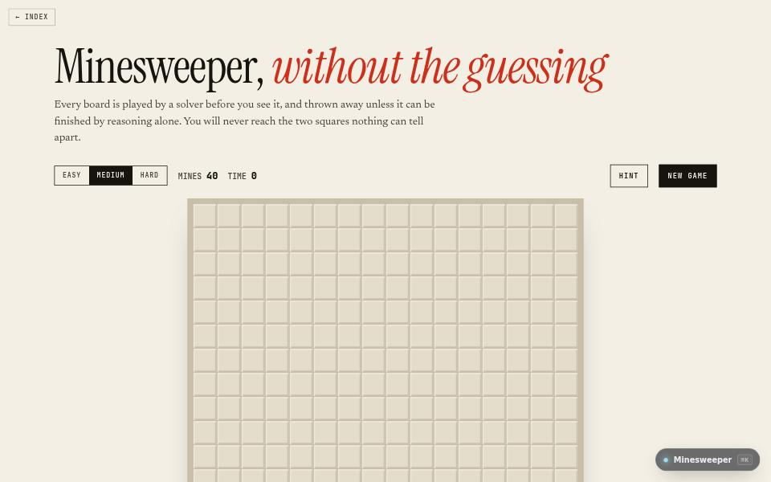

game · about 5 min · The Playground Reef
Minesweeper
Classic Minesweeper, except every board is proven solvable by logic before you see it, so it never comes down to a coin flip.

The problem
Every classic Minesweeper ends in a coin flip; every board here is proven solvable first.
What it does
- The three classic sizes
- Every board solvable by reasoning alone
- Lose, and it shows the square you could have proved safe
The most interesting decision
The fix is in the generator
After laying the mines it plays the board from your first click with only what a player can see. If it cannot finish without a guess, the board is thrown away and another is laid.
Built with
- Logic solver
- Board generation
- Keyboard play
Evidence
Lose, and it shows you the square you could have proved safe. Read its tests
Its world
A field of squares, every one of them provable.